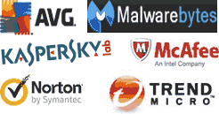

Malicious software includes Viruses - worms - bots - Trojan horses - spyware - adware - phishing attacks - browser helper objects (BHOs) collectively known as Greyware
When dealing with Grayware issues it's best to start by getting to know your computers startup processes before connecting to the internet, and by knowing the types of programs and software that initialize at startup, what processes run when you launch your web browser this will give you a good indication of what you should see in the task manager under the processes tab, after surfing the internet check if there are any new processes running, and by initializing a scan you can see if any infected files show up with your anti-virus, spyware and adware utilities, after scanning the computer any know infections can be checked in the task manager under the processes tab looking for the ones mentioned in the virus report.
The next place you can look is in the registry click on start - run and type in regedit this will take you to the registry where you can turn it off so it can't auto-start, the first thing to do in the registry editor is to go to file select export and make a copy of the registry to save a backup to the my documents folder just in case any changes that you make create problems and you can reverse the changes by using the backup.
Click on HKEY_LOCAL_MACHINE select software then select Microsoft then scroll down and select windows then select current version then scrolling to select run this shows you the processes running and you can look for the virus file, if the file is located in the temp folder it's a good indication that it's a virus once you've located the virus you can delete it.
Another place you can look is in msconfig to access this click start - run and type in msconfig this opens the system configuration tool and under the start-up tab check through the listing to find the infected file.
Using the command prompt to deal with viruses click start - run and type in cmd this opens the command line interface and from the command line type regsvr32/u and the filename of the infected file and press enter this should unregister the file from the directory and you should then be able to delete it.
Another way of dealing with an infected file is to use the cacls command once you've located the directories path using tools like Process explore or HijackThis and Google to double check that the file is not linked to anything that you want running anyway, from the command prompt change directories and go to the directory the file is located in and at the command line type (cacls the filename /p everyone: n) this should give the file no permissions to run at startup.
Viruses like to hide in the temporary folder and the users temporary folder click start - run and type in cleanmgr select the drive that the infected file is on usually the C drive this will delete your temporary files, temporary internet files and the recycle bin.
If you right-click on my computer and select explore select tools and then folder options click on the view tab select show hidden files and folders and uncheck hide extensions for known file types Usually .exe or .dll files and from the C drive select documents and settings the users name and then local settings and select the temp folder and delete the files you can also do this in Windows select the temp folder and delete the files.
Good protection is to make sure your firewall is on and working, get regular updates and security fixes from Microsoft and keep your anti-virus, spyware and adware utilities up to date with the latest definitions, it's always a good idea to make a note of the URL addresses of the web sites that you visit regularly this is more important if you are making any purchases from these sites and using a credit card etc. The utilities from sysinternals and HijackThis are worth checking out but it needs work on your part, google the virus files to gather the information needed to understand which are the correct proceedures to use before deleting too many processes.
Other places you can check on your computer would be the system32 folder where you can check the dates of the files installation to help narrow down your search, the temp folders are the places the file mostly reside usually .exe or .dll file extension, you can also check the prefetch folder it's another place that you can investigate but always make a backup before deleting any file and always do your research first.
Download and get autoruns from sysinternals, extract the file and rename autoruns.exe you might need to rename the file if the malware is blocking the installation, then download a Linux rescue CD you can use a live CD for this or the ultimatebootcd, burn the ISO file to disk then after identify the auto-starting malware files, to do this you run sysinternals autoruns and check the "hide signed Microsoft entries" and "verify code signatures", after scanning with autoruns use Google or another method to identify the malware, write down a list of the malware files, with the full pathname.
Boot the System Rescue CD you will then need to mount the windows drive An example would be using the command / dev/ sda1 this is the first partition of the first SATA or SCSI drive. If you have a different HDD setup, you need to use a different command / dev/ to mount the drive such as / dev/ hda1 is the first partition of the first PATA drive or / dev/ sdb3 is the third partition of the second SATA drive.
Then use the basic Linux commands " cd" to change the directory, " ls" to list the contents or the directory, and " rm" to delete the malware, reboot to windows and clean up the remaining infected files. Use autoruns to clear up the broken autostarts from the registry, and then run a full system scan with your favorite anti- virus and the malware should be removed!
You can download these utilities for free for your own personal use
AVG Anti-virus protection
Spybot Anti-spyware
Sysinternals the home page for utilities that assist in detecting Grayware
HijackThis a useful utility for checking for installed viruses
Links to websites that deal with virus problems
A list of good free Antirootkit tools
A site where you can upload a suspicious files for analysys
Some simple steps to check if you have been compromised
A list of excellent tutorials for protection and dealing with malicious subjects
Copyright © Phil Lacey 2022